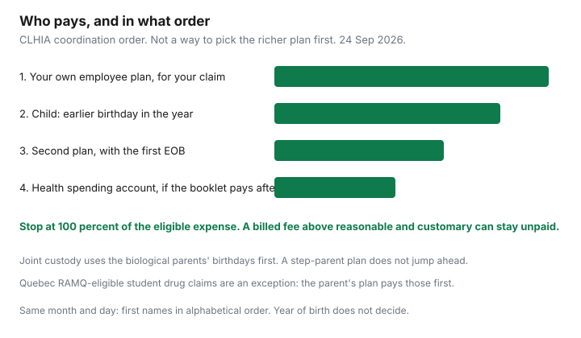

Insurance · Canada
Coordinating Two Canadian Workplace Benefit Plans: Stop Leaving Family Claims on the Table
A dual-income household often pays for two health and dental plans and then uses only one. The second card sits in a wallet. A $1,600 crown is reimbursed at 80 percent from the parent who booked the appointment, and the other plan’s unused maximum expires in December. Coordination of benefits is the industry rule for whose plan pays first and how the remainder is sent to the second plan. It is not a licence to choose the richer booklet. This page is that order, the paperwork, and the life events that change it. Disability income and group life are different contracts and stay on their own guides.
Disclosure: Education only. There is no natural affiliate offer on coordinating claims you already pay for. Saving Optimizer does not claim a partnership with any insurer, employer, or benefits administrator. Booklet wording controls. Rules below follow the Canadian Life and Health Insurance Association’s consumer coordination page, read 24 Sep 2026.
Key takeaways
- Your own employee plan pays your own claims first. Your spouse’s plan is second. For a dependent child, the birthday rule uses month and day, not who is older.
- Combined payments cannot exceed 100 percent of the eligible expense. A reasonable-and-customary cap on the second plan can leave a balance even when both maximums have room.
- Submit to the first plan, keep the explanation of benefits, and send that with the remainder to the second plan. Sending both plans the same receipt as if each were primary is a false claim.
- A health spending account usually pays after the insured plans. It is a Canadian private health services plan, not a U.S. health savings account.
- Marriage, divorce, a court order, and a student plan change the order. Write the plan-year reset on the calendar and use a needed treatment while both maximums still have room.
Birthday rule and dependent coordination basics for spouses with two plans
Start with the person on the bill, not with which plan looks more generous. The Canadian Life and Health Insurance Association’s Coordination of Benefits Guideline G4, as explained on its consumer page, sets the order by coverage status. Insurers are not supposed to flip the order because one plan has a higher annual maximum.
| Whose expense | First plan | Second plan |
|---|---|---|
| You | The plan where you are the employee. | The plan where you are a spouse or dependant. |
| Your spouse | The plan where they are the employee. | The plan where they are covered as your spouse. |
| A child, parents together or joint custody | The parent whose birthday (month and day) falls earlier in the calendar year. Year of birth is ignored. If month and day match, the parent whose first name comes first alphabetically. | The other parent’s plan. In joint custody after remarriage, step-parent plans come after both biological parents, in the same birthday order. |
| A child, single custody | The custodial parent’s plan, then that parent’s spouse. | The non-custodial parent, then their spouse. A court order or separation agreement that names a different order should be on file with both administrators. |
CLHIA’s published resolution for joint custody is specific. The biological parent with the earlier birthday pays first, then the other biological parent, then the spouse of the earlier-birthday parent, then the spouse of the later-birthday parent. A step-parent plan does not jump ahead of the other biological parent. That order still uses the biological parent’s birthday even if that parent has no coverage of their own. Single custody is a different list: custodial parent, custodial parent’s spouse, non-custodial parent, non-custodial parent’s spouse.

Status beats generosity in other combinations too. An active employee plan pays before a retiree plan. An employee plan pays before a student plan, and a student plan pays before a plan where the person is only a dependant. CLHIA’s page, used 24 Sep 2026, states a Quebec exception: when a Quebec student is covered both as a dependant on a parent’s group plan and by a post-secondary plan, the parent’s plan pays first for RAMQ-eligible drug claims. For claims that are not RAMQ drug claims, the student plan pays first. If there is no parent plan, RAMQ is first payer for those eligible drugs. Do not apply that Quebec drug rule to a dental claim in Ontario.
Register both plans with each insurer and with the dental or pharmacy office. If the office has only one card on file, the second maximum never sees the claim.
What coordination of benefits means for dental, drugs, and paramedical
Coordination means the second plan looks at what the first plan already paid and at its own rules. It does not mean each plan pays its full coinsurance on the original bill. CLHIA’s consumer page is plain: combined payments from all group plans cannot exceed 100 percent of the eligible expense, and they can be less than the amount the provider billed. If the second plan’s reasonable-and-customary limit is below the fee, it can determine that nothing more is payable.
Dental is where households leave the most money. Each plan has its own annual maximum, its own deductible, and its own percentage. A labelled sketch, not a fee guide:
| Step | What happens in this sketch |
|---|---|
| Primary plan | 80 percent of an eligible $1,800 crown is $1,440, if the remaining annual maximum is at least that. You still owe $360, plus anything the plan called ineligible. |
| Secondary plan | It can pay toward that $360, up to its own percentage, its remaining maximum, and its reasonable-and-customary amount. It does not pay another $1,440. |
| If you skip the secondary plan | The $360, and any amount over the primary maximum on a larger treatment, stays in your chequing account. The secondary maximum resets unused. |
Drugs follow the same ceiling. Many plans pay 80 percent after a deductible, sometimes with a dispensing-fee cap. The second plan may pay the coinsurance and the deductible remainder only up to its own formulary. A drug the second plan excludes is not rescued by coordination. Provincial public drug plans sit beside this. If a private plan covers the person, do not assume a provincial youth drug program still pays. Quebec’s RAMQ interaction for students is the exception called out above. Ask the pharmacist to run both private plans in the coordination order before you pay cash and hope for a cheque.
Paramedical claims fail on the definition, not only on the maximum. A plan that pays a registered massage therapist may not pay a bodyworker the booklet does not name. Per-visit caps are common: a $110 visit against an $80 cap leaves $30 that the second plan considers under its own cap. Annual paramedical maximums are per plan, so a household that needs physiotherapy can use both, in order, until each cap is met. Keep the practitioner’s registration number on the receipt. A missing number is the usual reason a second plan returns the claim.
Order of submission and explanation-of-benefits paperwork
The first plan must finish before the second plan can do its job. The practical sequence:
- Confirm who is first, using the table above, before the appointment. Tell the office both carriers and which one is primary.
- If the office can submit electronically, let the primary carrier adjudicate first. Many Canadian insurers then forward to a second carrier when both plans are registered. Ask the office whether that link is actually turned on. A verbal “we take both” is not the same as a successful second adjudication.
- If you pay and claim yourself, submit to the primary plan with the original receipt or the electronic claim. Keep a copy.
- When the explanation of benefits arrives, submit the unpaid portion to the second plan with that explanation attached. The second plan needs to see what was eligible and what was paid. A receipt alone, with no explanation, is how second plans delay or deny.
- Do not send the full original bill to both plans as two primary claims. If both pay 80 percent, you have been overpaid. Insurers ask for the money back, and a repeated pattern is a fraud review, not a paperwork quibble.
CLHIA’s consumer scenarios include the parent who pays the dentist and then cannot get the other parent to pass along the primary reimbursement. The association’s practical note is assignment of benefits: ask the dental office to have the primary insurer pay the office directly, so the money does not depend on the other parent’s bank account. That does not change who is first payer. It changes who receives the cheque.
Write down submission deadlines from each booklet the week you enrol. Plans commonly require claims within a stated window, often discussed as 90 days to 12 months from the date of service. The booklet’s number is the one that counts. A December crown whose primary explanation arrives in February can still be on time for the second plan, or it can be late. Ask before you assume the date of service saves you.
When a health spending account stacks after the insured plan
A Canadian health spending account is an employer-funded private health services plan. It reimburses eligible medical expenses, often including the part an insured plan did not pay. It is not a U.S. health savings account, it is not portable in the same way, and the payroll election that funds it is covered on the employer-benefits guide. This page only covers where it sits in the claim order.
- Usual design. The account pays after all insured plans have adjudicated, including the spouse’s secondary plan. Administrators reject an account claim that was never sent to the insured plan first.
- What it can pay. The leftover deductible, the coinsurance, and an eligible amount the insured plans left behind, up to the account balance and the expense list. It does not pay the whole bill a second time.
- What it often cannot pay. A balance the second insured plan would have paid if you had submitted the explanation of benefits. Using the account to skip coordination burns a balance that could have covered something the insured plans exclude.
- Forfeiture. Many accounts are use-it-or-lose-it at the plan year, sometimes with a short grace period or a capped carry-forward. Read which one you have. A forfeited balance is the expensive version of an unused dental maximum.
- Tax. Amounts a plan reimburses are generally not also claimed as a medical expense credit for the same dollars. The benefits guide is the payroll side. This is not a filing position.
A wellness spending account is a different pot. It often pays gym or lifestyle items and cannot be used as a back door for a dental coinsurance. Do not mix the two claim forms.
Life events: marriage, divorce, and adult kids aging off plans
The order is only as current as the enrolment. Benefits administrators do not see a marriage certificate or a separation agreement unless you send it.
- Marriage or common-law. Many group contracts allow you to add a spouse within a window after the event, often about 31 days, without extra health evidence. Miss the window and you may wait for open enrolment or have to provide evidence the booklet requires. The number is in your contract, not in a national rule. Once the spouse is on the plan, their claims and the children’s claims switch to the coordination order. Tell both dental offices the same week.
- Divorce or separation. Remove an ex-spouse when they stop being eligible. Leaving them on the plan can be a misrepresentation if the contract defines spouse as a current spouse. Update custody. If a court order or separation agreement says which parent’s plan pays first, send a copy to both administrators. CLHIA’s single-custody and joint-custody lists apply when no order sets a different sequence.
- Adult children. There is no Canada-wide age. A common booklet pattern is coverage to age 21, or to 25 while the child is a full-time student, ending on the birthday or at the end of that month. Read the definition of dependant. A student plan where the child is the member pays before a parent’s plan where the child is only a dependant, with the Quebec RAMQ drug exception above. Opt out of a student plan only when that plan’s waiver rules are met and the parent’s plan still lists the child. An opt-out that leaves a gap is not a saving.
- A claim in progress when eligibility ends. The date of service has to fall inside the plan that was in force that day. A crown prepared in December and inserted in January can be two dates. Ask the dentist which date the plan will see, and submit before the old plan’s deadline.
Group life and long-term disability do not follow this dental order. A job change can end both on the last day of work. The group-life guide and the disability guide are those decisions. Do not assume a health-and-dental coordination habit protects income or a death benefit.
Annual maximize: use remaining benefits before plan-year reset
Maximizing means finishing care you already need while both maximums and the spending account still have room. It does not mean booking treatment you do not need so a benefit “does not go to waste.” Unnecessary care is not a household saving.
Once a year, in the same sitting as the insurance review if that is when you have the booklets out, write five lines:
- Each plan’s reset date. 1 January is common. Some plans reset on the contract anniversary or a hire-month anniversary. The two employers may not share a date.
- Remaining dental maximum, drug deductible, and paramedical maximum on each plan, for each person.
- Health spending account balance, and whether it forfeits, carries forward, or has a grace period.
- Any treatment already recommended, with the date it should happen relative to those resets.
- The claim submission deadline, so a November visit is not filed in March by accident.
If a needed crown, a set of orthodontic records, or a block of physiotherapy is already prescribed, schedule it while the primary maximum and the secondary maximum both have room. After the reset, you are spending a new maximum, but you have lost the unused one. Coordination late in the year still goes to the first plan first. Build in time for the explanation of benefits to exist before the second plan’s deadline.
Some dental contracts carry a portion of an unused maximum into the next year. Many do not. Do not budget a carry-over you have not seen in the booklet. If both plans reset on 1 January, a 30 December appointment only helps if the office can submit, or you can, inside the deadline. A rushed claim with the wrong primary plan gets reversed in February, which is when people discover the second maximum was never touched.
Sources & date stamps
- CLHIA, Understanding the Coordination of Benefits — Guideline G4 scenarios: status not generosity; 100 percent of the eligible expense; birthday rule and step-parent order in joint custody; single custody; Quebec student RAMQ drug exception; employee then student then dependant. Page used 24 Sep 2026. The association states the page is not a legal reference.
- CLHIA Guideline G4 industry page, coordination of group health and dental, describes the same combined-payment ceiling. Booklet wording and an individual policy can differ. Ask the administrator.
- Health spending account design is contractual. Payroll treatment is on the employer-benefits guide, not a second copy here.
Frequently asked questions
Whose birthday decides the child’s dental claim?
For a dependent child covered by both parents, CLHIA’s coordination guideline uses the parent whose birthday falls earlier in the calendar year, by month and day, not by age. If the month and day match, first names in alphabetical order decide. A separation agreement or court order can set a different order. Send that document to both plan administrators.
Will two plans pay 100 percent of the dentist’s bill?
The combined payment cannot exceed 100 percent of the eligible expense. If the second plan’s reasonable-and-customary limit is lower than the fee charged, part of the bill can remain yours even when both plans have room in the annual maximum.
Can I send the claim to the richer plan first?
No. CLHIA Guideline G4 sets the order by coverage status, not by which plan has the higher maximum. Insurers are not supposed to reorder payers so the household captures more.
When does a health spending account pay?
Read the booklet. Many Canadian health spending accounts pay only after the insured plans, including the secondary plan, have processed the claim. They do not pay the whole bill a second time. A Canadian health spending account is not a U.S. health savings account.
Is this benefits advice?
No. Education only. Plan booklets and CLHIA’s consumer coordination page control the order. We do not claim a partnership with any insurer or benefits administrator.